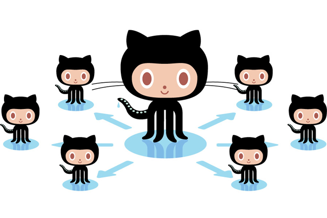
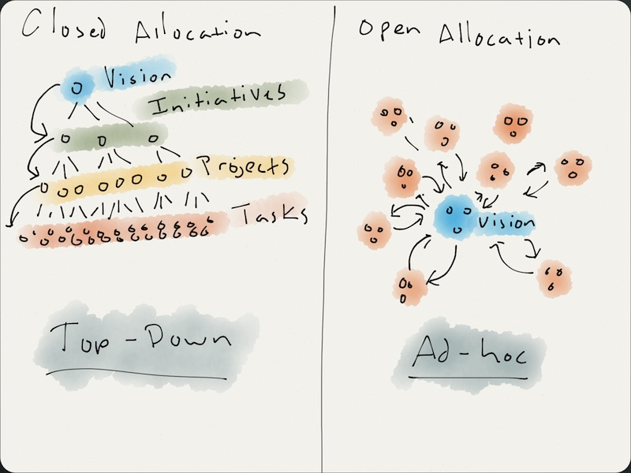

If there were such a willful company, with no layer of "managers," where people do what they love and create value, and everything else just happens naturally. How much waste caused by bureaucracy could be saved? How fast would such a company run? How many pointless conflicts would dissolve into nothing? What an amazing innovation culture it could form!
GitHub is a company that tries to infinitely approach this idealism! Programmers should all know GitHub. GitHub is a developer collaboration platform. As of 2014 statistics, it had over 3.4 million users and is rapidly commercializing.
GitHub is a private, for-profit company built on open-source software, but throughout its operations, they practice the spirit of open-source collaboration—the whole company advocates volunteer work. Still don't understand how it works? Let me explain.
Open Work Allocation
Most companies arrange work like this: senior management thinks of a project, and after project approval, financial budgeting, and staffing, they assign the project top-down to various teams and business units. Not so at GitHub. Their people use an "open work allocation" approach—people solve their own project assignment problems by assigning themselves to projects they want to work on, without any formal application or management intervention.
You might complain: GitHub has how many people? Only 175 employees, of course they can pull this off. But look at Valve, they have 400 employees and gross revenue of $10 billion. Valve's organizational structure is very close to GitHub's. That should say something, right?
Why talk about company structure?
In ancient times, people who practiced slash-and-burn farming were already thinking: what secondary or tertiary industries could they create with their surplus capacity? For example, after hunting, they could grow some crops, sew some clothes, and sell them at the market. Some research has shown that among surplus capacity, the most likely to have an impact is the surplus creativity in people's minds!
Hence Google's famous 20% time for side projects. A person named Clay Shirky wrote a book called "Cognitive Surplus: Creativity and Generosity in a Connected Age." His view is that free time gives people the opportunity to create valuable things.
Intuitively, this sounds like nonsense—just put people there, let them do whatever they want from start to finish, and they'll naturally create value? You're probably thinking to yourself: if you put so-and-so here, she'd probably browse Taobao 24/7.
However, it turns out such working conditions are indeed attractive to creative people. For example, a UX researcher named Chrissie Brodigan, who had a testing method called the Deprivation test and previously did user experience evaluation for Firefox, decided to join GitHub.
GitHub employees report that they are attracted to open work allocation mainly because it has no boundaries—these people enjoy freely choosing to work with like-minded people on cool things. They can even design their own programmable office together.
The Four Major Challenges of Innovation
Some might say: this is really troublesome, why make such a mess? I can't be bothered. If the company tells me what to do, isn't it enough for me to do it well with guaranteed quality?
We admit this argument works in some industries. For example, in recent years, there were many garment factories in the Guangdong and Zhejiang areas. For someone with deep experience in the garment industry, if you have clear goals—such as target audience, clothing styles, and sales regions—once these are determined, they can tell you how much to invest, what scale of assembly line to build, what kind of workers to hire, and even what workers at each step should do.
Unfortunately, today, if a company needs to survive for a considerable period, it must face unknown innovation: How to innovate? How to make such innovation happen repeatedly? Traditional companies set up an independent "innovation department" where people are responsible for innovation, while others work more like in a garment factory. GitHub is different: they base the entire company on a work model centered on innovation. They do this taking into account four major challenges to enabling a group of people to continuously and successfully innovate:
-
Managing Attention: The design of typical organizations is mainly aimed at building on existing success—on one hand reaping the benefits, on the other protecting established success—rather than focusing on exploring new ideas.
-
Alignment: Innovation often originates from individuals or small groups, but execution often requires the full effort of the entire company. And for various reasons (such as political and social factors), getting the rest of the large group on board is difficult.
-
Getting People to Work Together: When new products and services begin to bear fruit, people, ideas, and transactions grow rapidly, so more people need to be hired. On one hand, this makes it easier for people to get involved in work; on the other hand, it also makes it easier for some people to miss the forest for the trees, lacking an overall grasp of the vision and the current situation.
-
Rigid Management: Some innovations truly require fundamental changes to organizational structure and management style, but most companies' foundational structures are not so flexible—this directly makes it difficult for organizational structures to keep pace with innovation.
What exactly is GitHub's structure?
Communication! Communication!Communication is exactly the core element of open work allocation. In other words, GitHub's structure is like a distributed information transmission network, over which the company's goals and how it works are transmitted, and of course also what it should be doing.
The strategy of an innovative company is constantly adjusted, and for the incremental adjustments during a given period, keeping everyone's awareness in sync is crucial. Otherwise, some minor adjustments are hard to reach certain units or teams. When some teams fail to make corresponding adjustments and it accumulates to a certain point, a cognitive gap like a chasm forms between teams. You might say, that's nothing—every company I've seen is like this. For example, in the 1980s, Steve Jobs led a team to create the relatively successful Macintosh, while another team toiled away to produce the Apple III. Everyone knows about the Apple III.
Good communication can also help teams discover new or related business opportunities. For example, in this network, if there is a cool new project, it propagates through the network to the company's senior management. Executives can use that information to correct the course, and the result of the correction is simultaneously transmitted through the network to all units, letting them understand that "Project X" is now helping to realize the company's business.
How can this work?
1. Let people choose what they are interested in
GitHub first has to figure out what is most important to itself as a company, and reflect that in its strategy. Then each team should do something similar: "This is the company strategy, these are our products, so what matters most to our team?" Sales, technical support, operations, and other teams all did this, matching their team goals with the company's strategic goals. The information network mentioned earlier makes this form of organization more efficient.
Once teams find their work priorities, individuals must also find their own areas of interest, explore how their interests align with these strategies, and assign themselves to important things where they can contribute. So, for individuals, as long as something is important to the company and they have a strong interest in it, they can decide to do it. If it works well, everyone works on important things without needing someone to assign tasks layer by layer. This is the so-calledOpen Allocation Approach。

Take a GitHub example: for a while, 3D printers were very popular. A guy named Mike Skalnik became interested after the company bought a 3D printer. He gradually pulled time away from his original projects to tinker with the 3D printer. At first, who knew what a 3D printer had to do with an open-source code collaboration platform? But Mike gradually figured out 3D printing, and later he found that he could collaboratively maintain 3D-printed model files with others, which happened to align perfectly with GitHub's direction.
Mike later spent more and more time experimenting with 3D printing, and eventually he became the leader of the 3D printing project.
2. Give decision-making power to those closest to the problem
GitHub tries to hand decision-making power to people closer to the real problem. In GitHub's projects, each project has one main person in charge.
You might say: of course, our team also has a product owner. The question is: how do such people and teams come about? In a typical company, there is a middle or senior manager who divides the people under them into small teams, each responsible for an area. Each area also has a line manager responsible for staffing. So the line manager assigns someone: "You, yes you, will be the product owner for this product." Then the product owner is like a puppet responsible for that product. There is a huge problem here: the person at the top has to predict a relatively successful vision to tell everyone the direction of the product or company.
In the open work allocation model, the previous process is essentially reversed. GitHub believes that the people closest to the problem to be solved are the ones who understand it best, and they are most likely to know how to solve such problems. GitHub gives these people such decision-making power.
3. Hire people who like this way of working
I know there are still skeptics saying: isn't this just chaos? How do you avoid people just browsing Taobao every day? Let's go back to what we said earlier: if someone has to spend time and energy monitoring these things, or engage in office politics, then it means either the organization or the individual has a problem.
A crucial point is choosing the right people and bringing them into the team. What makes someone the right person? These people should be proactive by nature, passionate about technology and their own careers. The things these adults do will ultimately bring returns to the company. Of course, there are premises. Generally no one says, "OK, I'm passionate, today I'll spend the whole day baking bread for my colleagues." (There may be exceptions during holidays.) Everyone deeply believes that what they do will, to some extent, help move the company forward.
Digression
Is the world really flat?
For a while, the industry was preoccupied with turning their organizations into flat structures, but there's no need to obsess over how flat counts as flat. Instead, connect the various points in the organization into a network, allowing information to flow freely.
The open source spirit
The open source spirit means that when someone discovers something cool that others have built, they send them a message, telling them they're interested in the project and hope to contribute their efforts. Then the people behind the project tell this enthusiastic observer what matters most, and the latter decides how to contribute. GitHub's working model is like this, which is the open assignment of work mentioned earlier.
On transparency
When people are transforming their organizations, they often struggle with the issue of transparency. While GitHub advocates transparency, it also leaves some personal space for teams and individuals. If a team wishes to keep what they're currently working on under wraps and make it public at the appropriate time, that decision is also respected.
Does GitHub's approach have limitations?
It does!
1. The company still has to pay for important but uninteresting things, such as promotions and bonuses. 2
2. Executives are hard to hire. Normally, when a company hires a CEO, it grants the CEO substantial authority, but in a networked organization, it's hard for the CEO to directly issue orders and expect others to simply execute them. A CEO should have deep thoughts about the industry; at least within the company, they must prove themselves to be a thinker.
3. Firing people is hard. The ones who get fired are usually those egregious slackers, but in this kind of open assignment model, even proving that someone is slacking off takes a lot of time. However, compared to traditional work assignment models, it still has an advantage—traditional models produce more slackers.
Can open task assignment work in your company and organization?
Why not give it a try.
Source: URL: http://innolauncher.com/github/
Click me to share notes
<p style="font-size:14px;">Notes should be an extension of this article's content!</p><br> <p style="font-size:12px;"><a href="../tougao.html" target="_blank">Article submission, click here</a></p> <p style="font-size:14px;"><a href="./runoob-user-test-intro.html" target="_blank">How to obtain a registration invitation code</a></p> <h3 class="text-muted"><i class="fa fa-info-circle" aria-hidden="true"></i> You must <a href=".." class="runoob-pop">log in</a> before sharing notes!</h3> <p><a href="./runoob-user-test-intro.html" target="_blank">How to obtain a registration invitation code</a></p>